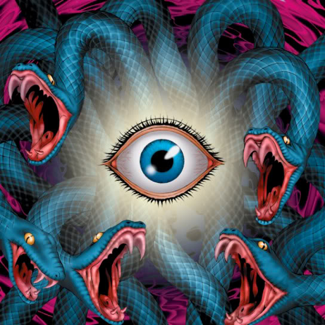

Gorgon's Eye

Trap Card
Deck Cost: 50
Effect: Permanent trap that triggers when an enemy card completes its move in the defense position. Automatically cancels the enemy card's move and eternally spellbinds it.
EFFECT NOT IMPLEMENTED!